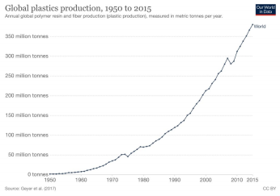

Bakelite was the first plastic to be produced, in 1907, making it the hallmark of a global revolution; which has undesirably led to generations of environmental pollution. Until the 1950s, plastic growth was concealed and unseen by the authorities. Over the next 65 years, annual production of plastics increased nearly 200 folds to 381 million tonnes in 2015. To elaborate the context, this is roughly equivalent to the mass of two-thirds of the world population.
The net increment of usage hasn’t been calculated for the year 2020, but undoubtedly an exponential rise can be predicted. Disposal and the 3R method seems to be in the air, but in our opinion; plastic landfill is the commonest problem well known, but solutions are not yet properly addressed by any responsible authority.
Plastic usage has been abused and adulterated by mankind, stepping towards the highest risks of pollution as briefly stated below;
It takes an average of 1000 years to decompose a plastic landfill, while a normal plastic bottle decomposes in 450-650 years.